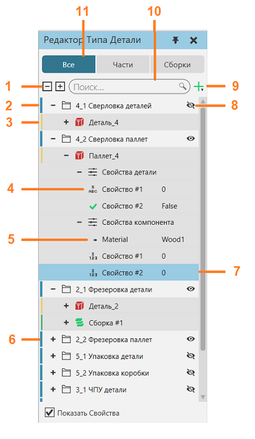
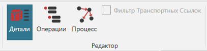
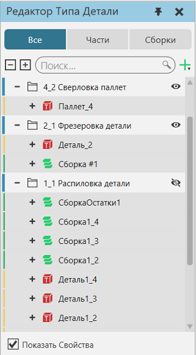
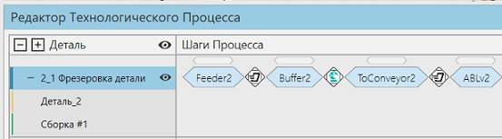
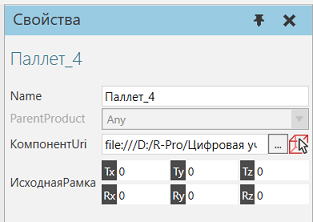
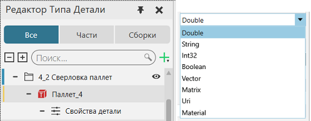
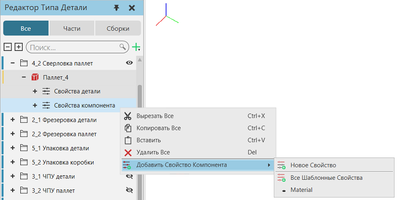
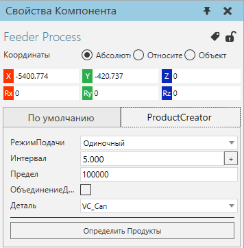
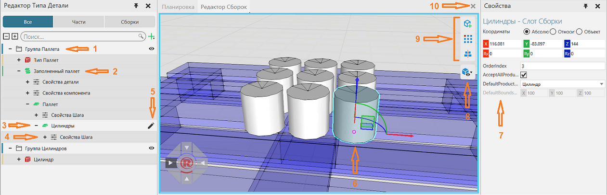

Панель Редактор Типа Детали показывает Типы деталей и Сборки, созданные для планировки. Панель позволяет добавлять и редактировать их, а также объединять их в группы процессов. Вы также можете определить свойства для типов деталей и сборок.

1. |
Развернуть/свернуть группы процессов и типы деталей |
2. |
Группы процессов |
3. |
Тип Детали |
4. |
Свойства детали |
5. |
Свойства, связанные с компонентом |
6. |
Свернутые группы процессов |
7. |
Выбранное свойство |
8. |
Видимость группы потоков в панели редактора потока процессов |
9. |
Добавить тип детали, сборку или группу процесса |
10. |
Поле поиска для названий свойств, типов детали, сборок и групп процессов |
11. |
Выберите, будут ли отображаться типы деталей, сборки или всё вместе |

Доступ
Чтобы получить доступ к Редактору Типов Детали:
·Перейдите на вкладку Процесс
·В группе Редактор щелкните команду Детали
·Слева появится панель Редактор Типа Детали.

Группы Процесса
Каждый тип детали принадлежит к группе процесса. Группа процессов может иметь одну или несколько деталей и сборок.

Группа процессов контролирует поток своих деталей от одного процесса к другому. Во всех случаях детали одной группы процесса имеют одинаковый поток. Например, разные типы деталей могут принадлежать одной группе потоков и проходить одни и те же этапы процесса.

Типы Детали
Тип детали — это определение того, что вы хотите производить в трехмерном мире. То есть, вы можете сделать любой тип детали.
Тип детали имеет три набора свойств: свойства по умолчанию, свойства компонента и свойства детали. Свойства по умолчанию не могут быть изменены, но их значения должны быть определены. Свойства компонента и детали являются необязательными и добавляются вручную. Вы можете редактировать, копировать, вставлять и перемещать их между различными типами деталей и группами свойств.
Свойства по умолчанию
Каждый тип детали имеет набор свойств по умолчанию. .
·Название - это название детали.
·ParentProduct указывает, наследует ли деталь свойства другой детали.
·ComponentUri — это компонент, связанный с деталью. У вас есть возможность использовать VCID или URI компонента или выбрать компонент в трехмерном мире. При использовании VCID компонента введите «vcid:» и далее VCID компонента, а затем нажмите ENTER.
·ИсходнаяРамка определяет происхождение детали по отношению к связанному компоненту.

Свойства Детали
Деталь имеет свой собственный набор свойств. Свойства детали могут использоваться для хранения информации на протяжении всего производства, в то время как связанный компонент с его свойствами изменяется в связи с ходом этапа производства.

Деталь поддерживает следующие типы свойств :
·Double (Тип чисел Real)
·String (текст)
·Int32 (обычное целое число Integer)
·Boolean значение (True или False)
·Векторы
·Матрицы
·URI
·Материал
·Пользовательский тип, реализованный с помощью API
Имейте в виду, что свойства детали не отображаются на панели свойств выбранного динамического компонента. Однако к ним можно получить доступ с помощью операторов процедуры или API-интерфейсов.
Свойства Компонента
Деталь имеет свой собственный набор свойств, связанных с компонентом. Вы можете создать новые свойства, которые будут добавлены при создании экземпляра детали к динамическому компоненту, или добавить свойства из связанного компонента, чтобы определить их значения по умолчанию.
Добавляется/назначается при создании экземпляра детали.

Имейте в виду, что деталь не является компонентом. То есть это два отдельных объекта. Удаление связи между деталью и компонентом не удаляет свойства компонента детали. В этом контексте думайте о типе детали как о шаблоне для создания новых деталей во время моделирования. Связывание компонента с деталью и добавление одного или нескольких его свойств — это быстрый способ определить или создать прототип новой детали. Однако редактирование свойств компонента не влияет на свойства компонента детали.
Product Creator
Создатель детали — это поведение, которое позволяет компоненту создавать экземпляры детали из типов детали во время моделирования. Таким образом, вы можете использовать компонент с таким поведением для создания экземпляров детали в моделировании, заданном на панели Редактор типов деталей. Из общедоступных моделей визуальных компонентов Каталога вы можете использовать компонент исходного процесса в качестве стационарного фидера или компонент фидера детали в качестве встроенного фидера.

Создатель детали может создавать детали, используя один из нескольких режимов.
·Одиночный создает деталь одного типа с заданным интервалом .
·Партия создает один или несколько типов деталей в определенном порядке. Каждая запись в партии представляет тип детали, его количество и интервал между созданием каждой единицы детали. У вас есть возможность создать одну партию или несколько с заданным интервалом .
·Таблица позволяет импортировать файл Excel, который определяет, какие детали создавать в определенное время
·Распределение выбирает тип детали для создания на основе взвешенной вероятности .
Сборки
Сборки представляют собой иерархические структуры шагов сборки. Каждый шаг сборки представляет собой один логический шаг в иерархии изделия, которое может быть собрано или разобрано. Каждый шаг сборки имеет определенное расположение по сравнению с его родительским шагом, и каждый шаг имеет свои собственные свойства шага. Каждый шаг содержит один или несколько слотов сборки для типов детали. Конфигурация слота выполняется в редакторе сборки.

1. |
Группа процесса сборочного типа детали. |
2. |
Тип сборки. Сборки могут обрабатываться как любые другие типы продуктов с операторами PM. |
3. |
Выбранный Шаг сборки. Этот шаг представляет собой группу цилиндров в сборке поддона. |
4. |
Свойства выбранного шага сборки. Свойства шага можно прочитать с помощью операторов PM. |
5. |
Значок открытия редактора сборки для выбранного шага. Значок отображается только при наведении курсора на шаг сборки. Редактор сборки открывается как новая панель трехмерной среды, в которой пользователи могут определить количество слотов, их расположение и тип детали для слотов. |
6. |
Выбранный слот сборки в редакторе сборки. С каждым слотом можно свободно манипулировать с помощью таких инструментов, как Выделить, Переместить, Измерить, Привязать, Выровнять и т. д. Кроме того, выбранные слоты также могут быть скопированы и вставлены. По умолчанию слот визуализируется кубом. |
7. |
Свойства слота сборки: OrderIndex определяет порядок сборки и разборки продуктов при наличии нескольких слотов. Порядок размещения начинается с наименьшего значения, а порядок комплектации начинается с наибольшего значения. AcceptAllProductTypes, AcceptProductTypes и AcceptFlowGroups используются для фильтрации экземпляров деталей, принятых в слот, когда сборка создается во время моделирования. DefaultProductType определяет тип детали по умолчанию, созданный для слота при первоначальном создании шага или сборки. DefaultsBoundsDimensions определяет размеры геометрии слота по умолчанию. Эти размеры будут переопределены, если выбран DefaultProductType. |
8. |
Панель инструментов визуализации сборки. Выбранный шаг всегда визуализируется, но другие шаги могут быть показаны прозрачным синим материалом или полностью. |
9. |
Инструменты добавления и центрирования слотов. Слоты могут быть созданы индивидуально, или они могут быть созданы в виде шаблона. При создании шаблона можно использовать шаблонный образец. Также можно использовать уже существующие шаблоны из других шагов сборки и сборок. С помощью инструмента для центровки слотов места слотов можно центрировать относительно исходной точки этапа сборки. |
10. |
Закрывает редактор сборки. |